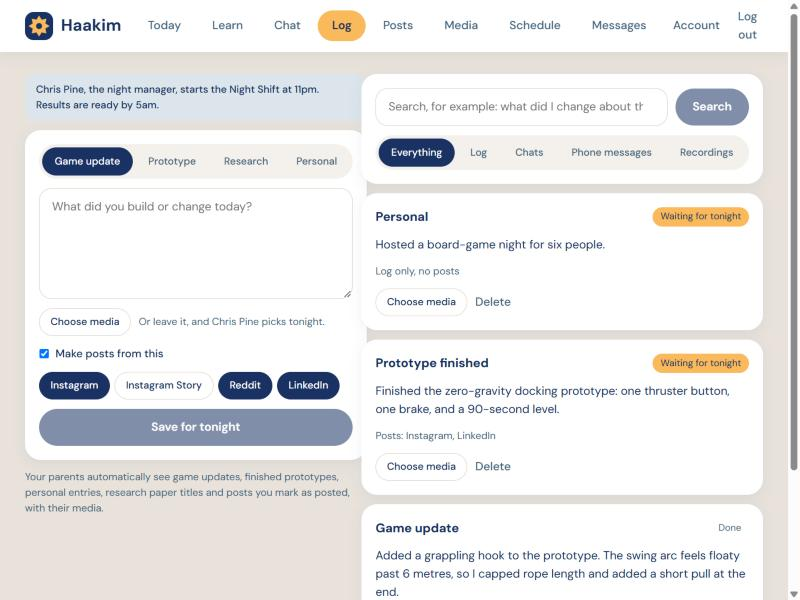

Systems I built for myself
I'm a game designer first. This page is the work I do outside games: tools that run my own working day. The same thinking goes into both, deciding what the loop is, what the rules are, and what the player (here, me) is allowed to hand over to the machine.
Looking for my game design work? It's in Projects and Breakdowns.
Haakim — a personal operating system for my working day
One timetable, one log, and a small team of AI assistants that work while I sleep. It runs on my own server, with a website and an Android app. I use it every day to plan my study and prototyping blocks, record what I built, and turn that record into post drafts.
My role: I designed the system: what each part does, how the parts feed each other, and the rules every assistant has to follow. I built it with an AI coding assistant (Claude Code) as my engineering partner, directing and testing each feature rather than writing most of the code by hand.



The screens show made-up sample data, not my real timetable or log.
The three loops
I designed Haakim the way I'd design a game's core loops: each one has an input I give, a step the system does on its own, and a decision that comes back to me.
1. Plan, do, mark, replan
A missed block always asks for a reason. "Ran out of time" twice in the afternoon becomes a suggestion to move that block earlier. The reason is the feedback that makes the next plan better.
2. Log to posts
The writer looks at the pictures and videos before writing, so a draft only mentions what is really on screen. It also labels each clip with what it shows and its best moments, so the media can be found again later.
3. Phone messages to a morning digest
The original text and the sender are never stored, and one-time codes are dropped before anything is saved. Only a scrubbed version reaches the digest.
The rules I set
Most of the design work was deciding what the assistants must never do. These rules are written into the system and checked by tests.
The team
One assistant doing everything gave vague results. Splitting the work into roles, each with a short brief and its own memory, made every one of them better at its job.
Runs the Night Shift at 11pm: picks media, has drafts written, digests messages, plans tomorrow, and tidies up.
Looks at an entry's pictures and videos, then writes one draft per platform in that platform's style.
Teaches from my own study documents, tests me in six questions or fewer, and remembers my weak areas.
Answers questions about how the day stands: the timetable, drafts waiting, and what happened overnight.
What it taught me as a designer
- Friction beats features. The tutor asked me to choose a topic and material before I could ask anything, so I stopped using it. The feature worked; the onboarding didn't.
- Feedback has to be instant. A swipe that waited for the server felt broken. Showing the result first and saving in the background fixed the feel without changing the rule.
- Constraints build trust. I only relied on the system once it was clear what it could never do on its own.
- A cost to skipping changes behaviour. Having to give a reason for a missed block made me miss fewer of them.
Built with
Earlier builds
What came before Haakim. Several are shelved, and I've kept the reason next to each, because knowing when to stop is part of the work.
IndieLaunchKit
Paste your itch.io link and get a page that's ready to publish: filled fields, an asset checklist, layout and a score against a rubric. It carries its own AI model inside the app, so there's nothing else to install and no server cost.
O.R.A.C.L.E
A personal Telegram bot with long-term memory, scheduled tasks and research scraping from Reddit, RSS and the web. Single-user and locked to me. Many of its ideas grew into Haakim.
Debatable
Takes one topic, runs a four-voice debate with a judge, and renders the result as a short vertical video. It works end to end on a home PC.
Shelved: built for fun, and I found no audience worth the upkeep.
DevStudio and GamePulse
Twenty-five specialist AI agents (designer, programmer, narrative, monetisation and more) working on game-dev tasks in shared rooms. GamePulse was the hosted version, run as a free open beta.
Shelved: neither produced work I'd publish, and there was no path to paying for itself.
Cal
Gregorian, Hijri and Gujarati calendars in a single view, with Hijri conversion built on a Julian Day Number method. The spec is done; the build isn't started.
Mountain Gazette (working title)
A game whose newspaper is written fresh by an AI model running inside Unreal Engine, reacting to what the player did. Spec and development checklist are written.